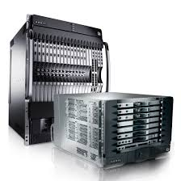
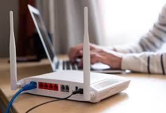

Dispositivos Requeridos para una red
Dispositivos como
| CMTS | routers | switches | tarjetas de red | cables | servidores | ordenadores |
Para armar una red extensa se requiere equipo clave como routers para conectar múltiples redes, switches para agrupar dispositivos en un segmento, access points para conexión inalámbrica, y tarjetas de red (NICs) en los dispositivos finales para conectarse a la red. También son necesarios medios de transmisión como cables y señales inalámbricas, y dispositivos finales como ordenadores y servidores.
switches:
Los switches son piezas de construcción clave para cualquier red. Conectan varios dispositivos, como computadoras, access points inalámbricos, impresoras y servidores; en la misma red dentro de un edificio o campus. Un switch permite a los dispositivos conectados compartir información y comunicarse entre sí.
¿QUE FUNCION HACEN LOS CMTS Y PARA QUE SIRVEN?

Los Sistemas de Terminación de Módems de Cable (CMTS) sirven para gestionar y distribuir servicios de internet y voz de alta velocidad a través de redes HFC (híbridas de fibra coaxial) hacia los módems de los suscriptores, actuando como el intermediario entre la red de cable y el acceso a Internet del cliente.
Routers:Un router es un dispositivo que ofrece una conexión Wi‑Fi, que normalmente está conectado a un módem y que envía información de Internet a tus dispositivos personales, como ordenadores, teléfonos o tablets. Los dispositivos que están conectados a Internet en tu casa conforman tu red de área local (LAN).